자막 없는 외국어 영상·음성을 통째로 자막으로 만듭니다. 되감아도 자막이 남고, 처리는 전부 기기 안에서 합니다.
| 한 문장 | 영상 하나를 통째로 자막으로 · 기기 안에서 처리 |
| 플랫폼 | iPhone · iPad, iOS 26 이상 |
| 언어 | 한국어 · 영어 · 일본어 · 중국어(번체) — 앱 UI 와 자막 언어 모두 |
| 가격 | 무료 (하루 3편) · 「제한 해제」 ₩6,600 1회 결제 |
| 서버·계정 | 없음. 음성 인식·번역·의역 전부 온디바이스(Apple Speech · Translation · Foundation Models) |
| 입력 | 기기 안의 영상·음성 파일 · 보호되지 않은 웹 영상(HLS·mp4) · podcast RSS · 홈 「추천 채널」(공공기관·공영: 미국 연준, NHK WORLD-JAPAN, NHK 라디오 뉴스, Marketplace, 대만 입법원) |
| 안 되는 것 | YouTube · Netflix 등 보호된(DRM) 영상 |
| 개발 | 1인 개발 · 대한민국 |
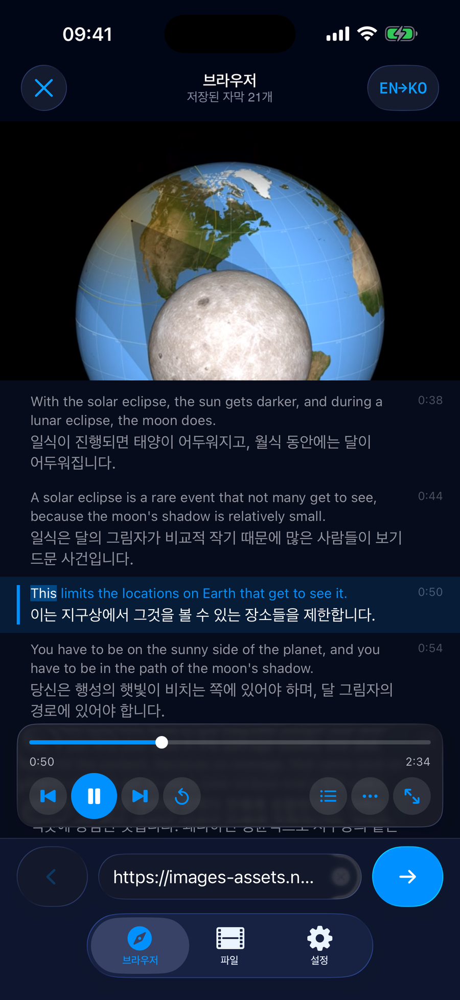
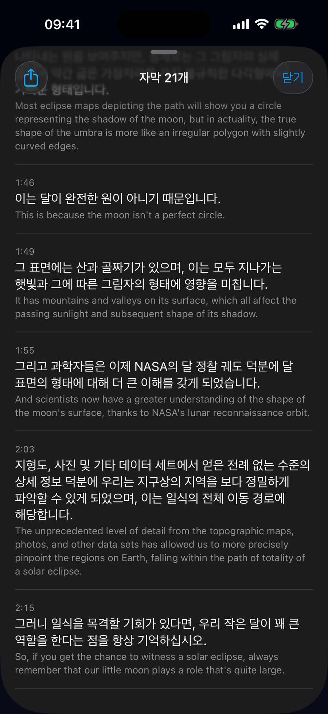
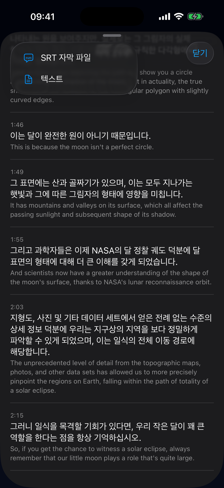
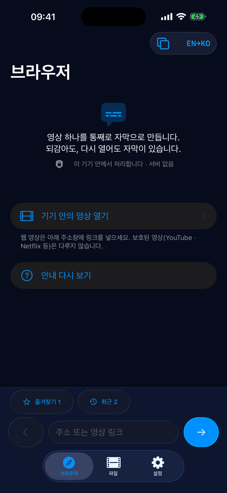
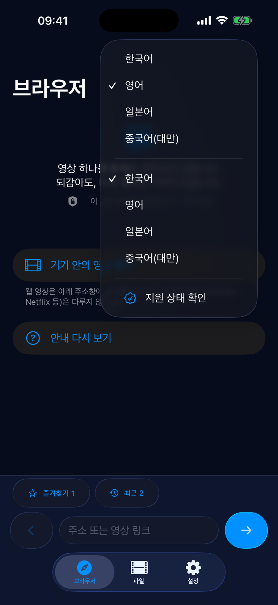
실시간 통역 앱은 되감으면 자막이 사라집니다. 이미 지나간 소리라 다시 만들 수 없기 때문입니다. Presub 은 재생 전에 영상 전체의 자막을 미리 만들어 두어 어디로 되감아도 자막이 있습니다. 강의·기자회견·뉴스처럼 다시 듣고 싶은 영상을 위해 만들었습니다. 그리고 회의 녹음이나 개인 영상을 남의 서버에 보내고 싶지 않아서, 서버 없이 만들었습니다.
데모 영상 30초Icon 512Screenshot 1Screenshot 2Screenshot 3Screenshot 4Screenshot 5
travelic.games@gmail.com — 인터뷰·리뷰용 프로모 코드 요청 환영
Turns a foreign-language video or audio, subtitle-less, into whole-video subtitles. Seek back and the captions are still there. Everything runs on the device.
| One line | Subtitle any video, on device |
| Platform | iPhone · iPad, iOS 26 or later |
| Languages | Korean · English · Japanese · Chinese (Traditional) — UI and subtitles |
| Price | Free (3 videos a day) · one-time “Unlock” US$3.99 |
| Server / account | None. Speech recognition, translation and rewriting are on-device (Apple Speech · Translation · Foundation Models) |
| Input | Video/audio files on the device · unprotected web video (HLS, mp4) · podcast RSS · “Featured channels” on the home screen (public bodies and public media: US Federal Reserve, NHK WORLD-JAPAN, NHK radio news, Marketplace, Taiwan Legislative Yuan) |
| Not supported | DRM-protected services such as YouTube and Netflix |
| Developer | Independent, one person · South Korea |
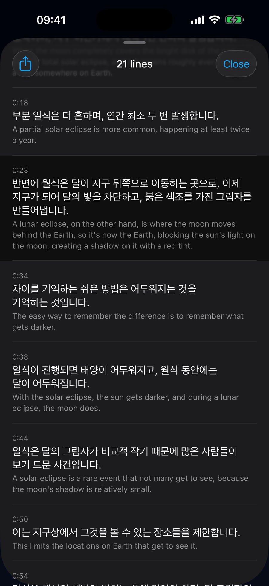
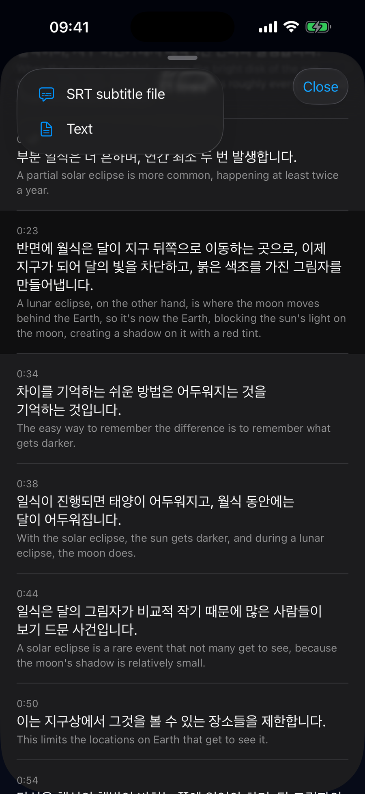
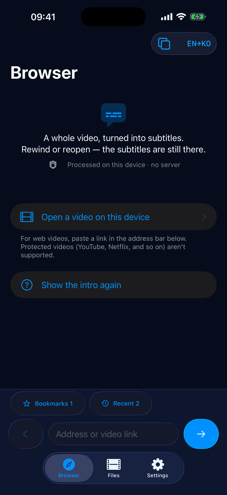
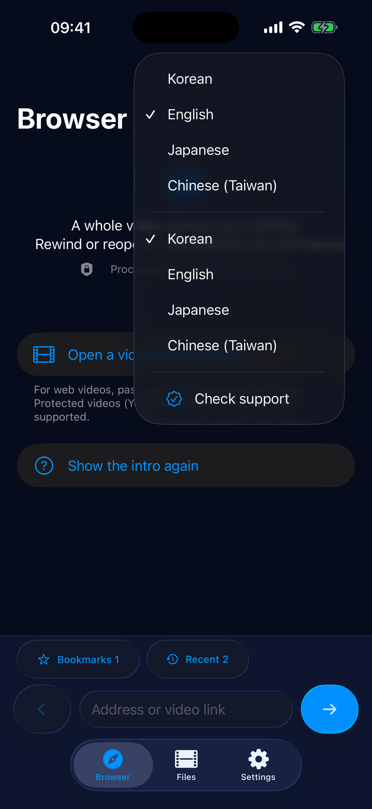
Live-captioning apps lose their captions the moment you seek backwards: the sound is gone, so nothing can be regenerated. Presub builds the subtitles for the whole video before playback, so the captions are there wherever you seek. It was made for lectures, press conferences and news — things you want to hear again — and without a server, because meeting recordings and personal videos should not leave the phone.
Demo video (30s)Icon 512Screenshot 1Screenshot 2Screenshot 3Screenshot 4Screenshot 5
travelic.games@gmail.com — promo codes available for reviews and interviews
字幕のない外国語の動画・音声をまるごと字幕にします。巻き戻しても字幕が残り、処理はすべて端末内で行います。
| ひとこと | 動画をまるごと字幕に · 端末内で処理 |
| 対応 | iPhone · iPad, iOS 26 以降 |
| 言語 | 韓国語 · 英語 · 日本語 · 中国語(繁体) — UI と字幕の両方 |
| 価格 | 無料(1日3本) · 「制限解除」 買い切り |
| サーバー・アカウント | なし。音声認識・翻訳・意訳はすべて端末内(Apple Speech · Translation · Foundation Models) |
| 入力 | 端末内の動画・音声ファイル · 保護されていないウェブ動画(HLS・mp4) · ポッドキャストRSS · ホームの「おすすめチャンネル」(公的機関・公共メディア: 米連邦準備制度、NHK WORLD-JAPAN、NHKラジオニュース、Marketplace、台湾立法院) |
| 非対応 | YouTube · Netflix など DRM 保護された動画 |
| 開発 | 個人開発 · 韓国 |
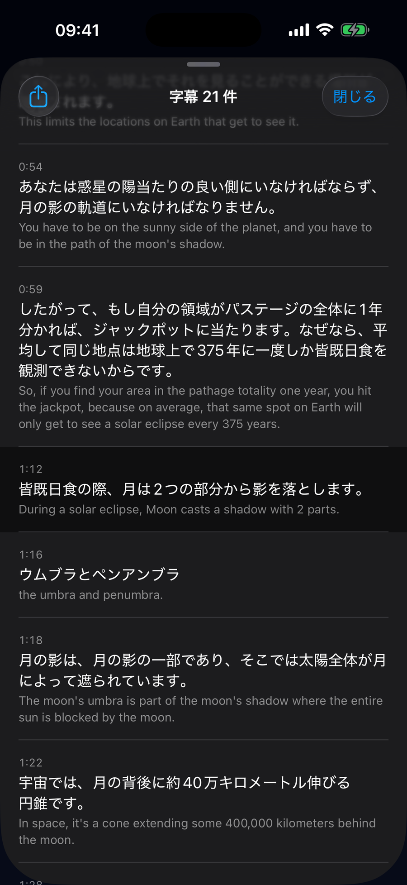
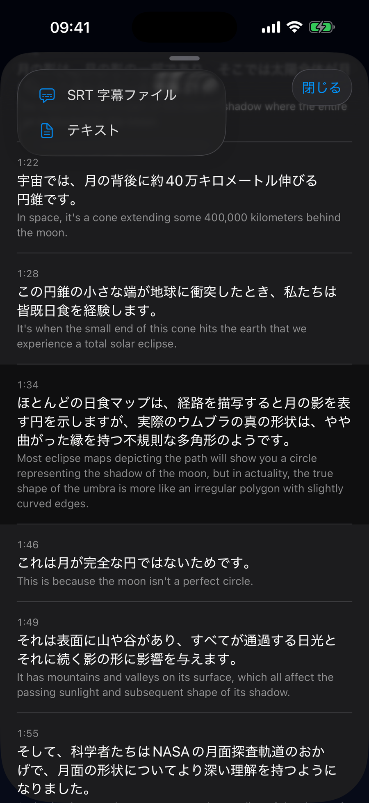
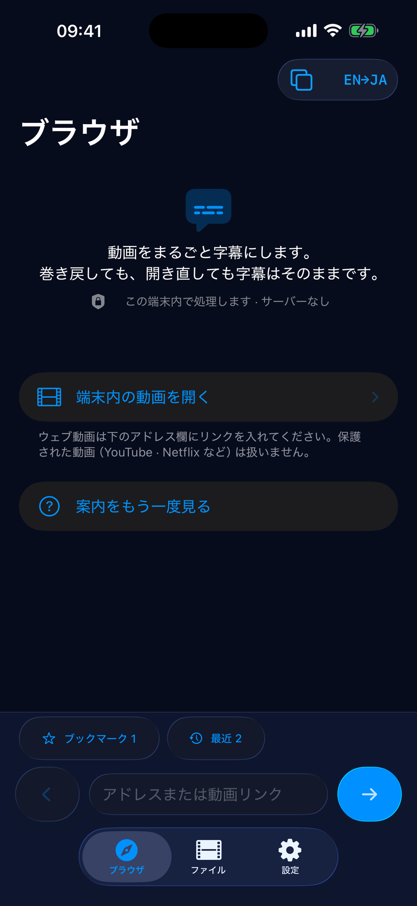
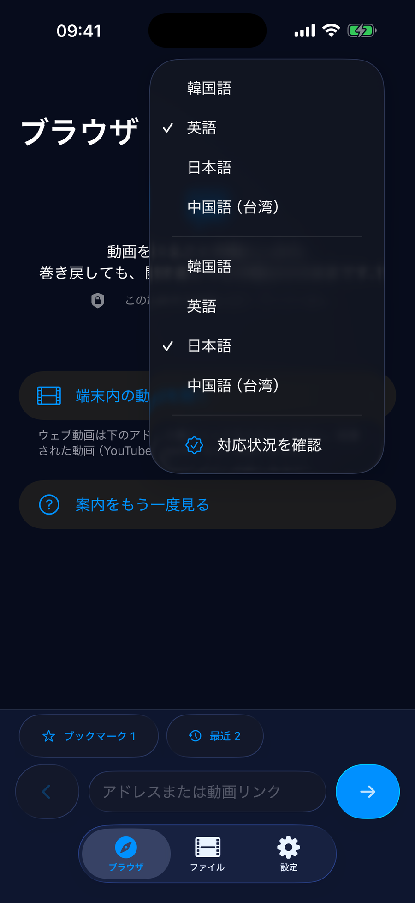
リアルタイム字幕アプリは巻き戻すと字幕が消えます。過ぎた音声は作り直せないからです。Presub は再生前に動画全体の字幕を作っておくので、どこに戻しても字幕があります。講義・記者会見・ニュースのように聞き直したい動画のために作りました。会議の録音や個人の動画を他人のサーバーに送りたくなかったので、サーバーなしで作りました。
デモ動画 30秒Icon 512Screenshot 1Screenshot 2Screenshot 3Screenshot 4Screenshot 5
travelic.games@gmail.com — レビュー・取材用のプロモコードをご用意します
把沒有字幕的外語影片或音訊整部轉成字幕。倒帶也有字幕，全部在裝置上處理。
| 一句話 | 整部影片轉成字幕 · 在裝置上處理 |
| 平台 | iPhone · iPad，iOS 26 以上 |
| 語言 | 韓文 · 英文 · 日文 · 繁體中文 — 介面與字幕皆支援 |
| 價格 | 免費(每天 3 部) · 「解除限制」一次性購買 |
| 伺服器／帳號 | 無。語音辨識、翻譯與潤飾全部在裝置上(Apple Speech · Translation · Foundation Models) |
| 輸入 | 裝置內的影片／音訊檔 · 未受保護的網頁影片(HLS、mp4) · Podcast RSS · 首頁「推薦頻道」(公家機關與公共媒體：美國聯準會、NHK WORLD-JAPAN、NHK 廣播新聞、Marketplace、立法院議事轉播) |
| 不支援 | YouTube · Netflix 等受 DRM 保護的影片 |
| 開發者 | 獨立開發 · 韓國 |
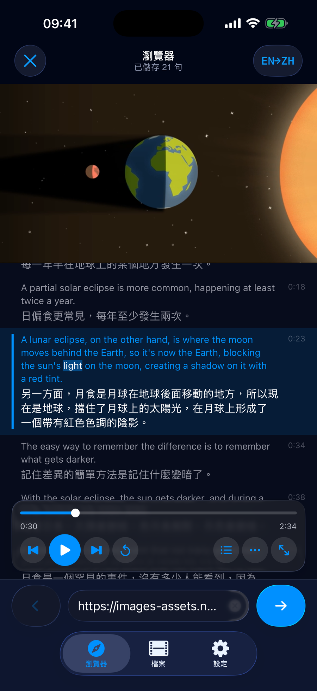
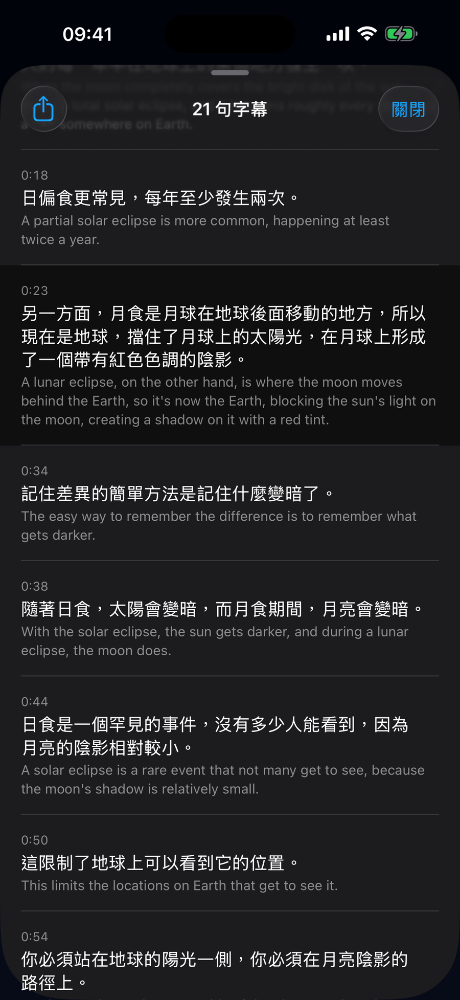
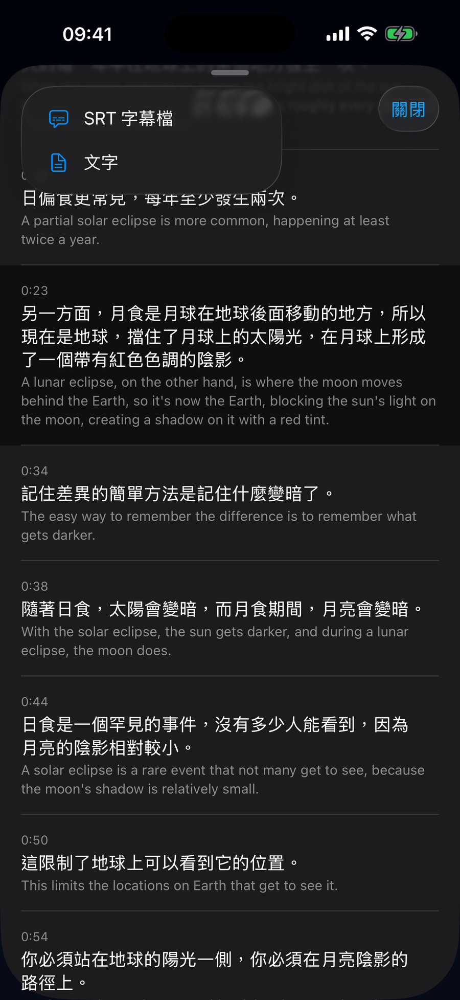
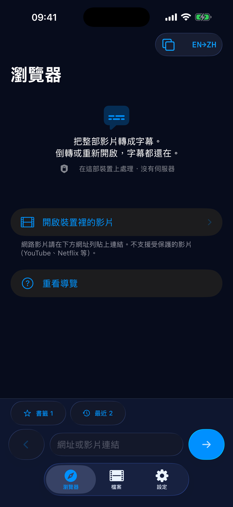
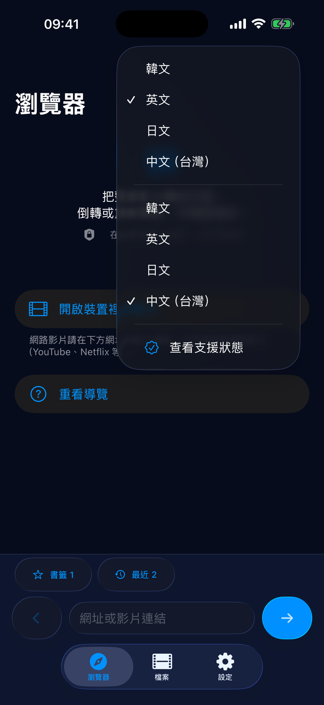
即時字幕 App 一倒帶字幕就消失，因為聲音已經過去，無法重做。Presub 在播放前先把整部影片的字幕做好，倒到哪裡都有字幕。它是為了講座、記者會、新聞這類想再聽一次的影片而做的；也因為不想把會議錄音或私人影片送到別人的伺服器，所以沒有伺服器。
示範影片 30 秒Icon 512Screenshot 1Screenshot 2Screenshot 3Screenshot 4Screenshot 5
travelic.games@gmail.com — 歡迎索取評測與採訪用的兌換碼